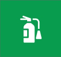
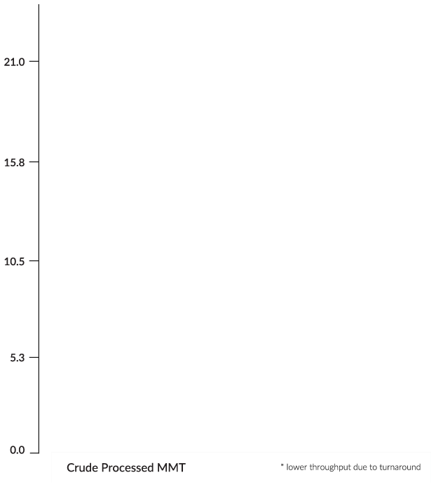

- Market Overview
- Operational Excellence
- Into the Future
- Financial Performance
- Our People
- Ethics Code
- Sustainable Development
- Governance
- Risk Management and Internal Financial Controls
Back to the
Board's Report
Global Market Overview
The global economy continued to expand in Financial Year 2018-19, with IMF pegging global growth projections to slow from 3.6% in 2018 to 3.3% in 2019. Risks to global growth skewed to the downside are marked against the backdrop of weakening financial markets, uncertainty around trade policy, UK’s exit from EU and concerns around Chinese outlook.
Financial Year 2018-19 saw the US Federal Reserve raising rates thrice - in June, September, and December 2018 by 0.25% each time. The rising US rates hit the Indian Rupee hard, dropping it to 74.49 to the US dollar. In the aftermath of the Sino-US trade strain however, the Federal Reserve toned down rates. This released pressure on the Indian Rupee letting it close below 69.50 for FY 2018-19.
The global oil demand is rising upwards and grew at 1.3 million barrels per day (bpd) for the financial year 2018-19 by IEA estimates. China and India together accounted for more than 50% of the growth in global oil demand.
Meanwhile, the global supply grew up 0.5 million bpd year-over-year. US emerged as the largest crude oil producer in the world with rapid increases in shale oil production, even as Saudi Arabia along with Russia made sincere efforts to reduce the supply glut and balance the markets by reducing production. US crude production grew at 1.6 million bpd on average during the past year and is further expected to grow by 1.1 million bpd during 2019, thereby almost single-handedly covering the expected increase in global demand during the year.
Volatility marked oil markets in 2018, driven mostly by the US administration and its external policies. While US imposition of sanctions on Iranian and Venezuelan oil exports supported the markets, the US - China tariff war provided downside momentum.
Even as markets appeared to get balanced after a year-long production cut by OPEC (Organization of the Petroleum Exporting Countries) and Russia, the US administration’s unexpected announcement of unilateral withdrawal from JCPOA (Iran deal) and renewed sanctions on Iran had sent crude oil sharply higher, reaching above USD 80 per barrel. However, domestic pump price considerations and upcoming mid-term elections forced the Trump administration to grant waivers to 8 countries, including China and India, from Iran sanctions, thereby leading the global oil prices into a renewed downward spiral towards the end of the year. This fall was accelerated by financial market players unwinding speculative long bets on crude prices, amid rising concerns about global economic growth from the US threat of increased tariffs on China and Europe to correct the trade imbalance. OPEC+ was again forced to extend their production cuts by 1.2 million barrels per day, with Saudi Arabia leading the way in reducing production and helping re-balance oil markets.
In Venezuela, civil unrest and renewed geopolitical tensions prompted US sanctions, in early 2019 on Petróleos de Venezuela, S.A. (PDVSA)-Venezuela’s state owned oil and gas company. As a result, Venezuela’s already dwindling exports have fallen further, from nearly 2 million bpd a couple of years ago to less than a million bpd today.
The continuation of OPEC+ production cuts and probability of withdrawal of Iran sanction waivers have tightened heavy/sour crude supplies. Although, US has increased crude supply, the markedly lower sulphur content of its crude translates output growth from the lighter spectrum of crude oils. As a result, the light-heavy/sweet-sour crude price differentials have reduced significantly over the past year.
Refining margins during the previous year reduced as the year progressed. Middle distillate margins lost momentum on account of dampening of economic growth as US tariff negotiations with China and Europe came to a head. The addition of 1 million bpd net capacity in 2018, twice that of 2017, contributed to erosion of refining margins. Growth rate for conventional refined products halved, to just 0.6 million bpd. Further, the increasingly lighter slate of crude for refinery processing has pressured light distillate margins while supporting heavy distillate margins. Fuel oil margins have also been supported by refiners’ increased focus on fuel oil destruction, in preparation for the upcoming fuel regulation in the global shipping industry (IMO 2020). As a result, complex refinery margins suffered significantly more than simple margins, considerably narrowing the spread between the two.
The imminent change in marine fuel oil specifications-IMO 2020-mandated by the International Maritime Organisation will help complex refiners, by providing a surge in middle distillate demand and the increased need for the processing of low sulphur fuel oil. The size and structure of Nayara Energy’s complex refinery will enable the Company to take advantage of the changing regulation.
Domestic Market Overview
In India, inflation climbed above 4% in the first half of the fiscal year leading the Reserve Bank of India (RBI) to raise REPO rates twice, in April and August 2018, lifting it to 6.50%. However, as growth began to flounder and with inflation reversing course, RBI cut rates to finally bring REPO back down to 6.25% by March 31, 2019. Credit markets spreads however remained tight as some large Non-Banking Financial Companies (NBFCs) including some Housing Finance Companies (HFCs) were hit with rising credit defaults in the second half of the year.
The Indian oil industry witnessed an overall growth of 2.7% in the consumption of petroleum products. Motor Spirit (MS / Petrol) consumption was driven by a 2.7% increase in sales of passenger vehicles, and 4.9% in two wheelers. A 17.6% increase in sales of commercial vehicles powered increase in the consumption of High Speed Diesel (HSD) by 6.4%, while LPG consumption grew by 6.8% with domestic LPG consumption at 88.4% of the total consumption, driven mainly by release of new connections and Double Bottle Cylinders (DBC).
Bitumen consumption grew by 8.7% during the year, given the Government’s push on improving road infrastructure. Petcoke consumption dropped by 20% owing to the ban by the Directorate General of Foreign Trade (DGFT) under the Ministry of Commerce & Industry, on import of petcoke for use as fuel. However, import of Petcoke has been allowed for some industries, such as cement, lime kiln, calcium carbide, and gasification industries, which will use it as feedstock.
During the year, the Government directed oil marketing companies to increase the mandatory ethanol blending for unleaded petrol from 5% to 10%. This notification came into effect on April 1, 2019. Additionally, the Central Pollution Control Board on orders from the National Green Tribunal directed oil marketing companies to install vapour recovery systems at retail outlets, distribution centres and railway loading facilities to curb air pollution.
In its bid to improve air-quality, India has announced its intention to move to BS VI emission standards. The move will call for high quality gasoline, which the Nayara Energy refinery, post turnaround in 2018 and accompanying asset enhancements, is already in a position to deliver.
Rejuvenating Our Asset
Nayara Energy’s refinery turnaround commenced as planned and was successfully completed in 30.5 days, 2.5 days ahead of schedule, with no Lost Time Injuries (LTI). Key activities covered during the turnaround included maintenance and inspection of all processing units, utilities, Products and Intermediates Tankage, Crude Oil Tank, Jetty and SPM, unit revamp for tie-ins for future projects, implementation of plant modifications and change of catalysts in most of the units.
After the turnaround, the refinery capability increased to take higher TAN and high sulphur crude and also enabling the Company to produce cleaner products with ultra-low sulphur levels.
Maximizing Asset Value
Although heavy crude availability became a high concern, the Company was successful in finding equivalent replacement through imports. The refinery’s flexible configuration allows the Company to take advantage of market opportunities. It is already capable of producing more than 50% Euro IV/V compliant gas oil and gasoline, and could successfully start MS and HSD BSVI supplies to meet the changing guidelines of higher quality auto-fuel grade supplies to Nayara Energy’s retail outlets in notified NCR and adjoining areas.
Your Company operates a world class capitive power plant, which has distinction of being run on Fuel Oil, Natural Gas/Naphtha/HSD and coal. This world class asset owned and operated by Vadinar Power Company Limited, a fully owned subsidiary of the Company got merged with the Company on November 30, 2018. This merger has resulted in more synergized operations and optimization of resources. The Company had an incidence of loss of coal from third party managed stockyard. The Company has filed an FIR in this regard and made necessary provisions for this estimated loss being approximately ₹ 300 million in the financial statements.
Achieved 4,016 LTI Free days for employees as on March 31, 2019

Attained 3,601 major Fire Free days as on March 31, 2019
Energy
Conservation
The Bureau of Energy Efficiency (BEE) monitors energy performance for all Indian refineries. Energy Factor (MBN) of Vadinar Refinery for FY 2018-19 was 59.62, which rates us amongst the most energy efficient refineries in India.
CCR Revamp
Continuous Catalytic Reforming (CCR) unit revamp project was completed successfully during this year. Operating capacity improved from 1.1 MMTPA to 1.3 MMTPA. Gross Refining Margin (GRM) also improved by upgrading sour naphtha into gasoline and enhancing the capacity to produce high premium high RON and low-sulphur gasoline grades.

Marketing Performance
Stretching 5.5 million kilometers, India’s road network is one of the largest in the world, and it is growing rapidly. The Government’s Bharatmala project, with an outlay of ₹6.92 trillion added 83,677 kilometers of new roads. The improved connectivity between cities, towns and villages in the country has led to a large spurt in road transportation. This, coupled with strong automobile growth across segments, was one of the key demand drivers for MS and HSD in the country. The incremental retail demand was met by new retail outlets.
In line with the Company’s retail business strategy, expansion of the retail network continued, achieving a significant milestone of 5,100 fuel stations by March 31, 2019. We continued to provide high quality products to our customers.
During the year, project ‘We Rise’ was launched. The project, which involves automation of Nayara Energy’s retail outlets, is a crucial step towards becoming a future-ready organization. Our Fleet programme continues to create enhanced value for our large customers including fleet operators and drive business growth.
The Company operationalized its first inland rail-fed depot at Wardha in Maharashtra. The depot is strategically positioned to cater to the requirements of customers as well as business partners in and around the Vidarbha region. The depot is equipped with state-of-the-art facilities, including a first-of-its-kind vapour recovery system driven by unique hybrid technology. The depot also has a 300-kVA solar power plant that is expected to generate power of 450k units per year.
In the B2B segment, focus remained on selling quality products in priority markets through the right channels.
Safety First
Health, Safety, and Environment (HSE) is our top priority. A safe business helps sustain operating performance, thereby leading to improved business and financial performance. Nayara Energy is committed to providing safe operations and work places, to protect the health and safety of employees, contractors and visitors, and the communities in which we operate.
Nayara Energy’s refinery operates an integrated health, safety, environment and quality (HSEQ) management system. It is the first ever petroleum refinery in India to receive the ISO 45001:2018 certification awarded for conformance with Occupational Health & Safety Management System. The HSEQ Management System is compliant with the ISO 9001:2015, ISO 14001:2015 and ISO 45001:2018 standards, and the Energy Management System is ISO 50001:2011 certified.
Safety, Operations and Environmental Integration
Our planned refinery turnaround was safely and successfully completed without any major incident. There was 50% reduction in incident rate observed from previous turnaround.
The refinery has a robust Emergency Response & Disaster Management (ERDM) plan in place and has conducted scheduled mock-drills to check and evaluate the effectiveness of its mitigation measures.
Apart from regular medical examinations, the refinery also conducted Qualitative Industrial Hygiene Survey in January 2019, which contained identification, evaluation and control of unhealthy exposure to chemicals in the refinery, office, etc. as well as air monitoring survey to determine airborne concentrations of chemicals in employee breathing zones gave us a clean bill of health.
Awards
Awards for system performance from regulatory and industrial bodies, such as Director Industrial Safety & Health, Oil Industry Safety Directorate, Quality Circle Forum of India, Confederation of Indian Industry.
Shram Bhusan Award & Shram Ratna Awards issued by Director Industrial Safety & Health (DISH) for individual contribution.
Excellent Energy Efficient Unit (Energy Management System) by CII.
Information Technology
Nayara Energy's technology investments are built around the principles of automation, digitization, speed, business continuity and cyber security. The broad IT goals are around enabling information sharing for decision making to bring in business agility, enhance workforce productivity while ensuring digital resilience.
The digitization endeavor has resulted in automation of various business processes across the value chain, from crude to retail and has also optimized routine business programs through ad-age technologies such as Robotic Process Automation and more.
Nayara Energy plans to enter the Polypropylene segment, sighting the growing and short-in-production domestic markets. India’s demand for polypropylene is growing steadily with 2018 consumption growth estimated at 8.8%. This is in line with the Company’s own forecast of 8% to 9% p.a. over the next 10 years. Domestic demand crossed the milestone of 5 million tons per annum (mtpa) in 2018 against a domestic supply of around 3.8 mtpa domestic capacity
Nayara Energy has set out its forward strategy to fully exploit domestic opportunities across refined products and petrochemicals. The associated asset development program to capture demand growth in India is split into phases.
Phase 1 projects are "quick wins" that would add value to LPG streams from current refinery in Vadinar by transforming them into petrochemicals and high-value gasoline blending components. As part of Phase-1, Nayara Energy proposes to add the following petrochemical units:
- a Propylene Recovery Unit (PRU),
- a Polypropylene Unit (PP),
- a Methyl-Tert-Butyl-Ether (MTBE) Unit and
- revamp of the Fluid Catalytic Cracking Unit (FCCU) to generate the required petrochemical feedstock. The proposed configuration will allow in the short term to improve the financial performance of the business.
The Company's investment will give it a competitive edge, both in domestic market and internationally. The proposed solution for producing polypropylene will benefit from comparatively low capex and the advantaged feedstock from the refinery, securing us a top quartile position on the international cost curve.
Revenue from operations reached ₹ 987,129 million for the financial year ended March 31, 2019, as compared to ₹855,618 million for the financial year ended March 31, 2018. The increase was mainly due to higher realisation from sale of petroleum products on account of higher product prices and higher domestic sales.
Current Price Gross Refinery Margin (CP GRM) was lower at USD 6.97/bbl in FY 2018-19 as against USD 8.95/bbl in FY 2017-18. Earnings before interest, tax, depreciation and amortisation (EBITDA) was lower by 36% to ₹ 44,977 million from ₹70,228 million in the preceding financial year mainly on account of lower margin and higher forex fluctuation loss.
The Company earned a profit after tax (PAT) ₹ 3,442 million in the current financial year against PAT of ₹ 5,320 million in the preceding financing year.
Considering the accumulated losses of previous years, the Board of Directors has not recommended any dividend for the financial year ended March 31, 2019. Further, no amounts are proposed to be transferred to the General Reserve except for transfer of ₹ 2 million from Debenture Redemption Reserve to General Reserve, during the financial year.
Standalone and Consolidated Financial Statements
The audited standalone financial statements, prepared as per Indian Accounting Standards (Ind AS) for the financial year ended March 31, 2019, form part of the Annual Report.
The audited consolidated Financial Statements of the Company, as required under Section 129 of the Companies Act, 2013 (Act), also form part of this Annual Report.
Ownership
Nayara Energy does not have any holding company. Rosneft Singapore Pte. Limited (formerly known as Petrol Complex Pte. Ltd.), a subsidiary of Rosneft Oil Company and Kesani Enterprises Company Limited, a consortium led by Trafigura Group and UCP Investment Group, continue to hold 49.13% shareholding each in share capital of the Company.
Subsidiary Companies
Pursuant to the Order passed by Hon'ble National Company Law Tribunal approving the Scheme of Amalgamation on October 30, 2018, Vadinar Power Company Limited ("VPCL") and Nayara Energy Properties Limited ("NEPL"), wholly owned subsidiaries of the Company have merged with the Company, effective November 30, 2018. During the year, the Company acquired balance 49% stake in share capital of its subsidiary, Coviva Energy Terminals Limited (formerly known as "Vadinar Liquid Terminals Limited"). Consequent to this acquisition, Coviva Energy Terminals Limited became a wholly owned subsidiary of the Company. There was no other change in the position of subsidiary companies during the year. The Company does not have any associates.
A report on the performance and financial position of each of the subsidiaries, in Form AOC -1, forms part of Annual Report and hence is not repeated here for the sake of brevity.
Post end of the financial year, the Board of Directors of your Company at its meeting held on July 24, 2019 in terms of the provisions of section 230 and 232 of the Companies Act, 2013 approved a Scheme of Amalgamation of its subsidiary, Vadinar Oil Terminal Limted (VOTL) with the Company, subject to receipt of approval of shareholders and other regulatory approvals. VOTL owns and operates the port and crude / product handling and storage facilities.
The Financial Statements of the subsidiaries as on March 31, 2019 and other related information will be made available to any member of the Company / its subsidiary(ies) seeking such information at any point of time and are also available for inspection by any member at the Registered Office / Corporate Office of the Company.
Share Capital
Pursuant to the Scheme of Amalgamation with the Company, which became effective on November 30, 2018, the authorized share capital of VPCL and NEPL was combined with the authorized share capital of the Company.
Accordingly, the authorised Share Capital of the Company stands increased to ₹ 90,007 million. There is no change in the subscribed and the paid up share capital of the Company.
Issue of Non-Convertible Debentures
The Company successfully completed its maiden issue of debt securities in the domestic bond market on August 2, 2018, with the allotment of 2,400 Secured, Unlisted, Redeemable Non-Convertible Debentures of ₹ 10 million each at par aggregating ₹ 24,000 million on private placement basis.
Driven to EXCEL
Nayara Energy’s success is underpinned by people and the culture they create together. During the year, the values encapsulated by the E.X.C.E.L. matrix were brought to life through a variety of initiatives, and backed by active participation of the entire Company.
Building a Strong and Balanced Culture
Nayara Energy undertook a culture shaping exercise in collaboration with Spencer Stuart, a premier leadership advisory and executive search firm. The culture survey results show the Company to be a balanced organization, both result orientated as well as caring. The Company believes in building relationships based on trust and respect for employees across all levels. This in turn ensures we are focused on the right things to drive success and deliver results.
The culture survey emphasized retaining focus on results and caring, and work towards strengthening the elements of learning and purpose. The following initiatives have been progressed in this Culture sharping journey
- Capability needs mapping against target results
- Digital solutions for learning and continuous development
- Behavioural interventions such as targeted Leadership coaching - for executive employees
Compensation and Benefits
The Company also conducted compensation benchmarking and restructuring to build market parity and enable high performance. Apart from Group term life insurance for employees, the Company also introduced an extended medical insurance for parents/parents-in-law, along with spouse and children. The Company is also exploring new ways to leverage Digital at work.
Nayara Energy strives to be a responsible and ethical Company with a culture of doing the things right. The Company has zero tolerance towards any form of harassment or discrimination, and has established a framework of policies and processes to ensure a safe, harassment-free and an empowering work environment for all employees.
In accordance with ‘The Sexual Harassment at Workplace (Prevention, Prohibition and Redressal) Act, 2013' ['Prevention of Sexual Harassment (POSH) Act'], the Company has set up POSH Committee in Mumbai and Vadinar to promote a safe working environment.
The Company emphasizes the need for regular awareness through sensitization sessions for both male and female employees.
Online mandatory module on POSH was also launched along with periodic employee communications. We had no POSH complaints registered in the current financial year.
At Nayara Energy, we are just not striving to be a world-class Company but also making concerted efforts in making a holistic difference in and around the communities in which we operate. Our approach to sustainable development is spread across the sustainability index, encompassing livelihood, water and education.
Additionally, to ensure that the efforts are sustainable, we have embarked on a program to train and build a network of social entrepreneurs who are catalyzing their own communities and furthering social change.
Corporate Social Responsibility Initiatives
The Company has constituted a Corporate Social Responsibility (CSR) Committee named the CSR, Safety and Sustainability Committee. The Board of Directors, on the recommendations of the Committee, has adopted a CSR Policy identifying activities to be undertaken by the Company. The policy can be accessed on the Company website at https://www.nayaraenergy.com/sustainability/csr-policy
The annual report on CSR containing the details of the CSR Policy adopted by the Company, and other particulars specified in the companies (Corporate Social Responsibility Policy) Rules 2014, is annexed to this Report as Annexure A. In line with the Company’s CSR policy, the Company's CSR interventions span across Livelihoods, Education, and Health & Sanitation. From a CSR budget of ₹ 211 million for the financial year 2018-19, ₹ 90 million was spent. Efforts to sharpen and develop an integrated plan for local programmes, to make a long term sustainable impact in the communities have resulted in a lower spend.
As part of its sustainability mission, Nayara Energy launched a revolutionary climate-smart agriculture project in partnership with the Government of Gujarat. The project aims to double farmer-income through integrated water resource management, soil quality improvement and crop diversification techniques. Going ahead, the project plans to revamp 11000 hectares in 15 villages of Devbhoomi Dwarka district with an endeavor to make the region water neutral by 2026.
Corporate Governance is a vital pillar of Nayara Energy's business framework. The Governance Framework designed to ensure compliance, transparency, and integrity in all areas of our work.
Directors
Mr. Didier Casimiro, nominee of Rosneft Singapore Pte. Limited was appointed as Director w.e.f. July 5, 2018 in place of Mr. Marcus Cooper. In accordance with the nomination received from Kesani Enterprises Company Limited, Mr. Alexander Bogdashin was appointed as Director w.e.f. October 9, 2018 in place of Ms. Elena Sapozhnikova. Mr. Alexey Karavaykin, nominee of Rosneft Singapore Pte. Limited was appointed as Director w.e.f. December 28, 2018 in place of Mr. Andrew Balgarnie.
Pursuant to a letter received from Life Insurance Corporation of India withdrawing nomination of Mr. R. Sudarsan from the Board of the Company, Mr. Sudarsan ceased to be Director of the Company w.e.f. February 1, 2019.
The Board wishes to place on record its appreciation for the valuable services rendered by Ms. Elena Sapozhnikova, Mr. Andrew Balgarnie, and Mr. R. Sudarsan during their tenures as Directors of the Company.
The Company has received declarations of independence as stipulated under Section 149 (6) of the Act from both the Independent Directors.
Directors’ Responsibility Statement
Pursuant to the provisions of Section 134(3)(c) of the Act, it is hereby confirmed that:
- In the preparation of the annual accounts for FY 2018 – 19, applicable accounting standards have been followed along with proper explanation relating to material departures.
- The Directors had selected such accounting policies, and applied them consistently and made judgments and estimates that are reasonable and prudent so as to give a true and fair view of the Company’s state of affairs at the end of FY 2018 – 19 and of the profit and loss for the same period.
- The Directors had taken proper and sufficient care for the maintenance of adequate accounting records in accordance with the provisions of the Act to safeguard Company's assets and prevent and detect fraud and other irregularities.
- The Directors had prepared the accounts for the year ended March 31, 2019 on a 'going concern' basis.
- The Directors had devised proper systems to ensure compliance with the provisions of all applicable laws, and that such systems were adequate and operating effectively.
Policy on Appointment of Directors and Remuneration
The Board has adopted a policy for appointment,
remuneration, training, and evaluation of Directors and
employees. The policy, interalia, includes the criteria and
procedures for selection, identification and appointment of
Directors, criteria for appointment of Senior Management
Executives, remuneration to Executive and Non-Executive
Directors, training and performance evaluation of the
Board, etc. and other matters provided under Section
178(3) of the Act. The above policy is available on the
website of the Company at
https://www.nayaraenergy.com/investors/information
Performance Evaluation of the Board, Chairman, Committees and Individual Directors
Formal evaluation of the performance of the Board, its Committees, the Chairman, and Individual Directors for FY 2018 – 19 was carried out. The Independent Directors evaluated performance of the Chairman, Non-Independent Directors, and the Board. Feedback from Individual Directors was sought based on a structured questionnaire covering, among others, Board and Committee composition, skills of Directors, quality and content of agenda and performance of Directors at the meetings. Evaluation was carried out by an independent agency, based on responses from all the Directors. The evaluation was reviewed by the Nomination and Remuneration Committee and the Board of Directors.
Key Managerial Personnel
During FY 2018 – 19, the following executives were designated as Key Managerial Personnel under the Act:
Mr. Charles Anthony Fountain
Executive Chairman
Mr. B. Anand
Chief Executive Officer
Mr. Anup Vikal
Chief Financial Officer
Mr. C. Manoharan
Director & Head of Refinery
Mr. Mayank Bhargava
Company Secretary
Audit Committee
During the year, the Audit Committee comprised of Mr. Deepak Kapoor (Independent Director) as its Chairman and Ms. Naina Lal Kidwai (Independent Director) and Mr. Chin Hwee Tan as its members. There was no change in the constitution of the Audit Committee during financial year 2018 – 19. During the financial year 2018 – 19, all the recommendations of the Audit Committee were accepted by the Board.
Risk Management
The complex operations, dynamic economic environment coupled with the growth plans of Nayara bring with them several strategic and operational risks. Nayara is also committed to highest levels of Ethics and ensuring highest standards of safety for its employees and the community which requires effective management of HSE and Ethical Compliance risks. The Management recognises that these risks need to be understood and managed effectively in order to ensure sustainable growth and meet business objectives.
Hence, the Company has set up a robust and effective Enterprise Risk Management framework that drives a risk aware culture across the organisation and ensures all key risks are effectively identified and managed.
The key risks are addressed by implementing appropriate and adequate risk response plans and internal control measures that brings down the risks to acceptable levels. Through its ERM framework, the Company manages both financial risks such as movements in crude & product prices, forex rates and interest rates as well as non-financial risks such as legal and regulatory compliance, health, safety & environment, cyber, reputational, geo-political, security risks, etc. During the year the Company has adopted consolidated Price and Market Risk Management Policy to manage price, treasury and market risks. The Price and Market Risk Management Committee manages the financial risks and take strategic decisions on forex and commodity hedging in line with the formulated Policy.
The Board of Directors keeps continuous oversight of the key risks to the organisation through the Audit Committee. In 2018, the Audit Committee set up the Risk Management Working Group (“RMWC”). The RMWC, jointly with the Risk function, reviewed the risk assessment and minimization procedures for the key business operations of Nayara Energy (Refinery, IST, and Marketing) and made presentations to the Audit Committee. In the opinion of the Board, with its Enterprise Risk Management framework, the Company is identifying and mitigating all possible key risks.
Internal Financial Controls and their adequacy
The Company has in place a robust system and framework of Internal Financial Controls. This framework provides a reasonable assurance regarding the adequacy of operating effectiveness of controls with regards to financial reporting, operational, and compliance risks. The framework ensures that the Company has policies and procedures for ensuring orderly and efficient conduct of the business, safeguarding of assets of the Company, prevention and detection of frauds, accuracy and completeness of accounting records, and timely preparation of reliable financial information. The Company has devised appropriate systems and framework including proper delegation of authority, effective IT systems aligned to business requirements, risk based internal audits, risk management framework and whistle blower mechanism.
The Company has also developed and implemented a framework for ensuing internal controls over financial reporting. This framework includes a risk and control matrix covering entity level controls, process and operating level controls and IT general controls. Such controls have been assessed during the year under review taking into consideration the essential components of internal controls stated in the Guidance Note on Audit of Internal Financial Controls over Financial Reporting issued by The Institute of Chartered Accountants of India.
The entity level policies include anti-fraud policies such as code of conduct, conflict of interest, confidentiality and whistle blower policy and other policies (viz. organization structure, HR policies, IT security policies).
During the year, controls were tested and no material weakness in design and effectiveness was observed. Nonetheless your Company recognizes that any internal control framework, no matter how well designed, has inherent limitations and accordingly, regular audits and review processes ensure that such systems are reinforced on an ongoing basis.
Vigil Mechanism
The Company is committed to adhere to the highest standards of ethical, moral and legal conduct of business operations, including the measures against bribery, corruption and corporate fraud, as well to manage conflict of interest situations. Towards this end, the Company has established a Hotline Whistle-blower Policy and also established a robust Vigil Mechanism for Directors, Employees, Associates and other Stakeholders to report concerns about unethical behavior/conduct without fear of punishment or unfair treatment. The policy also has a process for providing direct access to the Chairman of the Audit Committee. All the reported complaints are reviewed and investigated in the right earnest and appropriate actions initiated as deemed necessary.
The details of Hotline Whistleblower Redressal System can be accessed on the website of the Company at https://www.nayaraenergy.com/whistle-blower